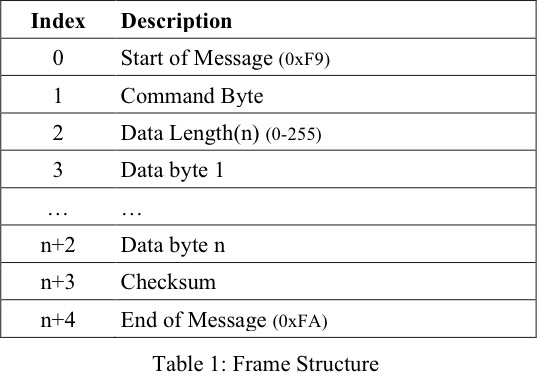

Unit Testing Embedded Systems
About Me
Gabe Torres
BuLogics CTO

Overview
What are embedded systems?
Unit Testing
Unity/Ceedling
Examples
Lessons Learned
What are embedded systems?

Embedded Systems
8-bit µCs to powerful ARM cores
Interface with physical systems
Programmed in C
Memory constrained
Single function (not general purpose)
Unit Testing
Unit Testing & TDD
Test the smallest unit (function)
Write test first, then write code
Leads to clean design
Hard in embedded!
uint8_t AddNumbers(uint8_t x, uint8_t y)
{
return x+y;
}
void test_AddNumbersShouldAddCorrectly(void)
{
uint8_t result = AddNumbers(2, 4);
TEST_ASSERT_EQUAL(6, result);
}
void test_AddNumbersShouldHandleOverflow(void)
{
uint8_t result = AddNumbers(0xFF, 1);
TEST_ASSERT_EQUAL(0, result);
}
-------------------------
OVERALL UNIT TEST SUMMARY
-------------------------
TESTED: 2
PASSED: 2
FAILED: 0
IGNORED: 0
Unity/Ceedling
Unity
Unit test framework for embedded C
www.throwtheswitch.org
Ceedling
Build framework for Unity
Written in ruby, invoked by rake
Structure
- build # Temporary build files
- project.yml # Ceedling configuration
- rakefile.rb # Rakefile to invoke ceedling
- src # C source files
- simple.c
- simple.h
- test # Test files, all prefixed by test_
- support
- test_simple.c
- vendor
- ceedling # Ceedling as a git submodule
Invocation
prompt$ rake test:simple
Test 'test_simple.c'
--------------------
Running test_simple.out...
-------------------------
OVERALL UNIT TEST SUMMARY
-------------------------
TESTED: 2
PASSED: 2
FAILED: 0
IGNORED: 0
Test File
void setUp(void)
{
//runs before every test
}
void tearDown(void)
{
//runs after every test
}
void test_ShouldDoSomething(void)
{
TEST_MESSAGE("This test should do something");
}
Walkthrough
Module Under Test:
Simple UART protocol
HAL (Hardware Abstraction Layer) : BuSerial.h
typedef void (*CharReceivedCallback)(uint8_t, void *param);
typedef struct SerialDevice
{
void (*PutChar)(uint8_t);
uint8_t (*GetChar)(void);
void (*RegisterCharReceivedCallback)(CharReceivedCallback,
void *);
} SerialDevice;
Module Interface
//Definitions
typedef enum
{
PTW_SUCCESS = 0
} PTW_STATUS;
typedef void (*MessageCallback)(uint8_t cmd, uint8_t *payload, uint8_t len);
//Exported functions
void PTW_Init(SerialDevice *dev);
PTW_STATUS PTW_SendMessage(uint8_t cmd, uint8_t *payload, uint8_t len);
PTW_STATUS PTW_RegisterMessageHandler(MessageCallback *cb);
Tests!
void test_SendMessageShouldPrependSOF(void);
void test_SendMessageShouldIncludeLength(void);
void test_SendMessageShouldIncludeCMD(void);
void test_SendMessageShouldIncludeEOF(void);
void test_SendMessageShouldIncludePayload(void);
But how do we know what is getting sent?
Fakes!
#define MAX_BUFFER_LENGTH 255
typedef struct
{
uint8_t bufferLength;
uint8_t buffer[MAX_BUFFER_LENGTH];
} OutputBuffer;
SerialDevice * FakeSerial_Create(void);
void FakeSerial_Destroy(SerialDevice *dev);
OutputBuffer FakeSerial_GetOutputBuffer(SerialDevice *dev);
Demo
Lessons Learned
Detach from the hardware
TDD leads to great design
Borrow ideas from OOP
Don't fear pointers!
Gabe Torres
github.com/gtorres88/ptwtalk
@bulogics bulogics.com